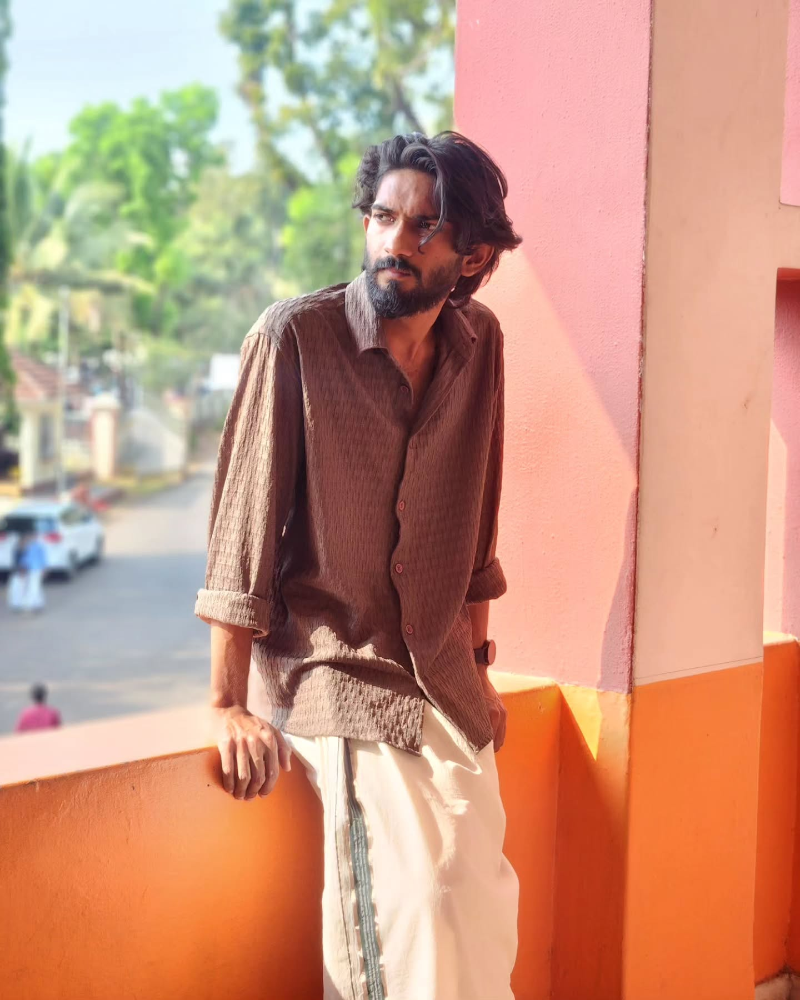

Selected work
- Adaptive Handover Optimization in Open RAN TensorFlow, TFLite, Python
- Seccomp-based System Call Filtering C, Linux, Seccomp
- CCTV Deployment Optimization Python, PyQt5, ILP
AI / ML Researcher
I build AI/ML solutions that turn complex data into actionable insights and measurable improvements. My work includes signal-based modeling, predictive systems, and optimization, where I focus on developing reliable and interpretable models grounded in real-world constraints. These systems can be applied to enhance decision-making, improve system performance, and support engineering workflows across domains.

Selected work
Experience
Education